4. Working with GenAI Tools#
Attribution This lecture is developed by Denys Godwin. The content of it is partially based on Simon Willison’s Guide to Agentic Engineering Patterns. It also includes concepts from documentation published by OpenAI and Anthropic and short educational content on LLMs from 3blue1brown. Generative AI assisted the development of the in class activity, but was not used to generate any of the text below.
In 2005, a “freestyle” chess tournament was held, pitting grandmasters, chess supercomputers, and human-computer teams against each other. The winning team was a pair of pretty good players who were REALLY good at augmenting their skills with a chess computer.
The surprise came at the conclusion of the event. The winner was revealed to be not a grandmaster with a state-of-the-art PC but a pair of amateur American chess players using three computers at the same time. Their skill at manipulating and “coaching” their computers to look very deeply into positions effectively counteracted the superior chess understanding of their grandmaster opponents and the greater computational power of other participants. Weak human + machine + better process was superior to a strong computer alone and, more remarkably, superior to a strong human + machine + inferior process.
Garry Kasparov, “The Chess Master and the Computer”, The New York Review of Books, 2010
The winning team’s skill didn’t come from being the best at chess, or having the strongest computer. Their win came from practice at combining the strengths of human planning and machine processing.
4.1. What is Agentic Engineering?#
An LLM agent runs tools in a loop to achieve a goal.
Simon Willison, “I think ‘agent’ may finally have a widely enough agreed upon definition to be useful jargon now”, September 2025
Not agentic:
You ask a chat interface to write code, and then copy and paste the response into a file.
You ask a Large Language Model to write a script for you, look at it, and turn it in.
You see and accept the in-line code completions in VSCode driven by predictive models.
Agentic:
You describe changes. An agentic harness edits files, researches, runs tests, and uses other methods to ensure that the state of the work matches the changes.
Agentic coding has existed for a few years (tracing back in its modern form to a 2022 paper titled ReAct: Synergizing Reasoning and Acting in Language Models but was not always useful for production code. A huge shift happened November 14, 2025, when Claude Opus 4.5 was trained specifically to engage in multi-step reasoning and action chains. The past year has seen widespread adoption as coders find that AI agents augment and improve their output rather than needing extensive supervision and effort.
{kind=link}
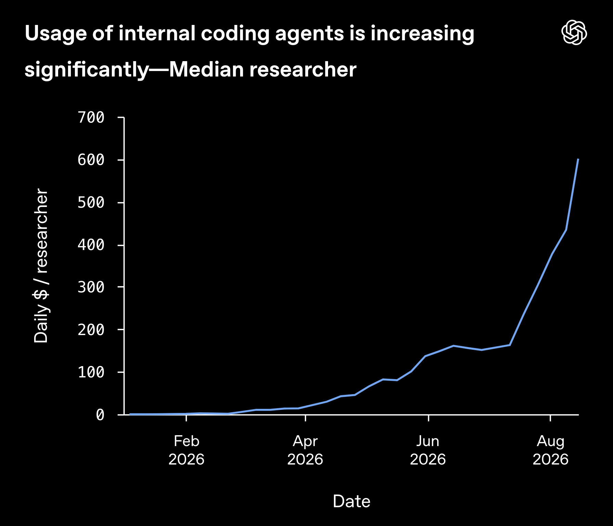
Fig. 4.1 Daily usage of median researcher at OpenAI in 2026. Source: OpenAI#
4.2. Key Concepts and Mental Models#
4.2.1. LLMs#
There are many fantastic resources for learning how Large Language Models (LLMs) work and why they can be used in the way we are using them. We particularly recommend the excellent series from 3blue1brown, who also has lessons on how AI works in general as well as other math topics. This is just a quick overview.
4.2.1.1. LLMs are Predictive Models#
{kind=link}
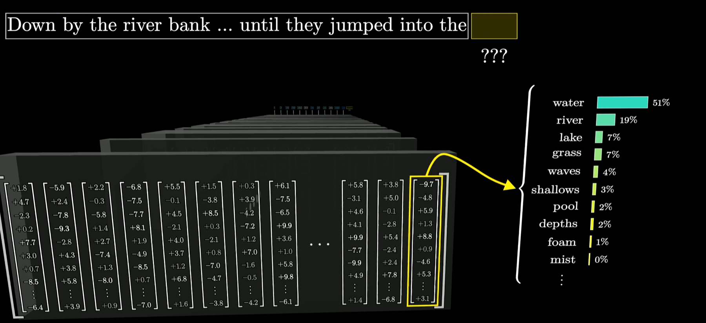
Fig. 4.2 An LLM predicts a probability distribution over the next token. Credit: 3blue1brown#
The LLM driving an agent is a function which takes inputs, processes them according to a large collection of equations, and returns a probability distribution for what is most likely to follow the inputs given the data which conditioned the collection of equations.
An LLM has no “memory” internally of any conversation - it is just a very sophisticated machine that takes inputs and returns outputs, storing nothing.
4.2.1.2. Tokens#
Large language models process text using tokens, which are common sequences of characters found in a set of text. The models learn to understand the statistical relationships between these tokens, and excel at producing the next token in a sequence of tokens.
OpenAI
Tokens are vectors of numerical values which models use to represent non-numerical inputs. Experiment with the OpenAI Tokenizer to see it in action. The list [40, 4271, 1741, 174682, 33199, 483, 22752, 0], for example, are the GPT-5 IDs of tokens which comprise the sentence: “I enjoy geospatial analytics with python!”
{kind=link}
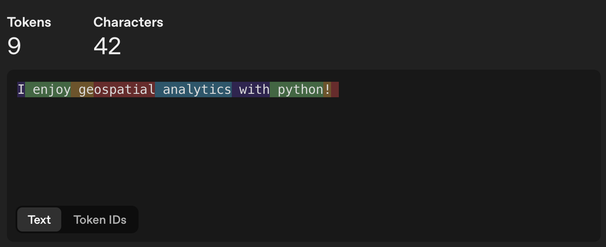
Fig. 4.3 How GPT-5 splits a sample sentence into tokens. Source: OpenAI Tokenizer#
{kind=link}
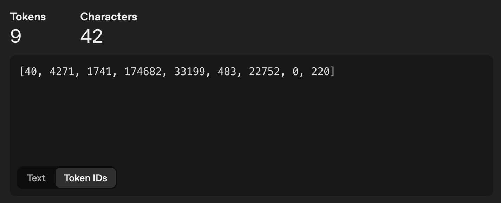
Fig. 4.4 The same sentence shown as GPT-5 token IDs. Source: OpenAI Tokenizer#
Model Providers such as Anthropic (Claude models) and OpenAI (GPT Models) measure usage by number of tokens input and number of tokens output, charging for each or counting towards a quota. Most often, larger models will charge more per token, given that they require stronger, more expensive hardware and more resources to create and run.
4.2.1.3. Reasoning#
{kind=link}
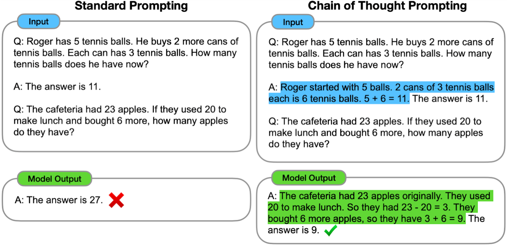
Fig. 4.5 Standard prompting vs Chain of Thought prompting. Source: Google Research#
Initially, LLMs would just immediately predict the next word in a sequence. However, the most likely next word according to data patterns is not always the correct word. In the present day, level of effort controls how long models will use chain-of-thought before responding to the user or (in the case of AI agents) using tools and changing files. Higher effort usually means better responses, but at higher token usage and cost. The figure below shows the relationship between effort, model size, and token use for combinations of effort and model for the latest OpenAI models in creating SVGs (Scalable Vector Graphics). Note that these are all created by language models as text, similar to prompting a model to create a geoJSON file.
{kind=link}
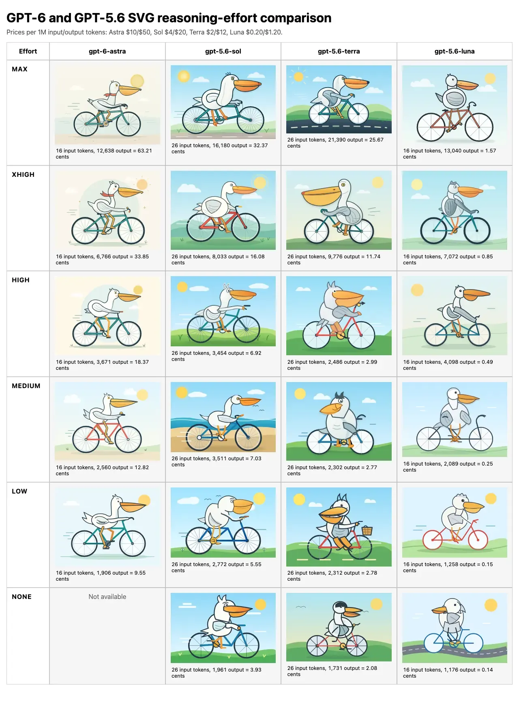
Fig. 4.6 Comparison matrix of model and effort for generating SVGs. Number of input and output tokens and cost is shown below outputs. Source: Simon Willison#
4.2.2. Coding Harnesses#
The coding harness is what allows LLMs to edit, run, troubleshoot, and research code to fit user requirements.
Why?
LLMs are completely stateless - every time you send a message in an interface, the model re-processes the entire conversation to generate output. There is no “memory” - models are just a function of input tokens producing output tokens. Harnesses overcome this by structuring these inputs and outputs in ways that simulate working memory and provide the model with ways of interacting with a stateful system (code on the machine)
LLMs are probabilistic - they return a probability distribution. However, many coding tasks require deterministic outputs given inputs. For example, when we run tests, we need the result of those tests to be consistent run-to-run to guide development. If we just fed test code into an LLM and asked it to predict test results, those predictions would not be grounded, and would be hugely more expensive than just running the test directly. Harnesses allow models to run cheap, deterministic tools like tests and act on results.
Examples of models are Anthropic’s Claude Opus, OpenAI’s ChatGPT Astra, and Google Gemini. Examples of coding harnesses are Anthropic’s Claude Code, OpenAI’s Codex, Microsoft’s Github Copilot, and the open-source harness OpenCode.
LLMs are only capable of taking inputs and returning outputs. An electric motor takes in electric current and returns force, but in order to move a car it must be connected to a control system, a drivetrain, and wheels. Similarly, an LLM needs a coding harness to drive changes on a filesystem, get feedback, and make corrections.
4.2.2.1. Anatomy of the prompt#
no again the goal is that we have highly inteligent model as good top researcher, we want to find new attacks real prompt from an engineer on Anthropic’s research team
What we type into a coding harness’s prompt, like the example above, is just one part of what is sent to the LLM driving the process.
System prompt - Sometimes a company secret, often leaked. Provided by the code harness.
Tool definitions - the names, descriptions, and parameter schemas of everything the agent is allowed to call. Provided by the code harness.
Project instructions - files like AGENTS.md or CLAUDE.md, pulled in from the repository. Provided by the user.
Retrieved data - file contents, search results, and MCP server responses added during the session. Dynamically created by the code harness during the turn.
Message history - every previous turn, including tool calls and their results.
The user message.
Anthropic calls this “context engineering” as opposed to prompt engineering: “the full context: system instructions, tools, external data, and message history” is part of the agentic prompt. Source: Effective context engineering for AI agents
4.2.2.2. The Agentic Loop#
Everything in this big prompt sandwich is tokenized (turned into numerical representations) and sent to the model, wherever it is being run. Then, the LLM outputs messages, tool calls, or other actions that the harness executes, returning the results back to the LLM in a loop until the LLM predicts that all appropriate actions have been taken according to the requirements and intermediate outputs.
4.2.2.2.1. Model Context Protocol#
MCP (Model Context Protocol) is an open-source standard for connecting AI applications to external systems.
The project’s own analogy is a USB-C port for AI applications: one standard connector for data sources, tools, and workflows. Tools built into Codex and Claude Code are platform-specific. A third-party organization that publishes an MCP server knows that no matter what harness a user is in, as long as it supports MCP it will work with the service.
For a curated list of geospatial MCP servers, visit https://github.com/sparkgeo/geo-mcp-servers.
4.3. Prime Concerns for Using Agents#
Responsibility and Quality Assurance
Safety and Security
Efficiency of Use
4.3.1. Responsibility and Quality Assurance#
A computer can never be held accountable, therefore a computer must never make a management decision.
IBM internal training slide, 1979
when you can produce code so much faster, time spent blocked awaiting a decision from someone else becomes a much more notable bottleneck. Engineers who can make product decisions can move a whole lot faster, and the cost of getting one of those decisions wrong is much less prohibitive.
Code used to be expensive to write. It is now incredibly cheap. However, that doesn’t mean that coding skills are obsolete.
Writing the actual code is one step in a longer process of problem solving:
Problem definition - learning the unmet needs of people you are serving and defining project requirements and constraints for the software project you are creating.
Building the software - writing the code itself.
write code to accomplish what people need
deploy the code in ways that match the needs of your service population
Evaluating the software against the project requirements and constraints, and engage with your service population to ensure that it fulfills the needs of the people you’re serving
Now that code is cheap, we can spend more time on the other steps of this process. The skill ceiling of coding isn’t how quickly you can write code that executes what you want it to. The new limit is in how effectively you are able to build relationships and trust, understand the context in which you are working, and make sense of problems and solutions. However, you still need to be able to understand the code to do this.
It is possible that you will not use agentic tools for your job. However, you will probably be working as part of a team, and chances are someone on that team, or someone you are serving, will be using agentic AI to write code. Being able to talk about agentic AI will most likely be part of your job, even if it’s only to point out when it’s being used wrong.
Shipping worse code with agents is a choice. We can choose to ship code that is better instead. Simon Willison
4.3.1.1. Responsibility and QA - best practices#
Collaborate with the people you are serving to decide what to build.
Use rigorous testing - both within the agentic loop and afterwards - to evaluate changes.
Draw a line around your own voice and do not compromise it. Where you draw that line is up to you, but if you are writing as yourself, stand behind every word you write. When something is written by generative AI, make it abundantly clear.
Spend time designing what you will build before building it. Then, document your design and the needs and constraints that shaped it in an AGENTS.md that agents will consult every time they make changes. Even if you never use AI, this is a helpful part of your process!
AGENTS.md is “a simple, open format for guiding coding agents.” It started with OpenAI Codex, Amp, Jules, Cursor, and Factory, is now maintained by the Agentic AI Foundation under the Linux Foundation, and is used by over 60,000 open-source projects. For our in-class exercise, we will look at a simple example.
4.3.1.2. Responsibility and QA - exercise#
Use the terminal to clone the class activity github repository:
git clone git@github.com:DWGodwin/class-example-geog313.git
Spend a few moments exploring and inspecting the project. In particular, open the README.md and AGENTS.md files. Remember, the coding harness will always load AGENTS.md into every new session, and so should contain things we always want the model to know when making changes.
The prompts/ directory contains instructions for this activity, which will be reproduced here as well. The following steps are from prompts/00_check_status.md and prompts/01_prompt_for_latitude.md
In the terminal, run
pixi run geoandpixi run testto confirm the repository and environment works as intended. Then, rungit statusto make sure the working tree is clean.Navigate to the copilot chat window on the right of VSCode. If it does not appear, you may need to use View → Chat to navigate to it.
Make sure Copilot is in Agent mode - this is currently the default setting. If not, select it from the dropdown menu.
{kind=link}
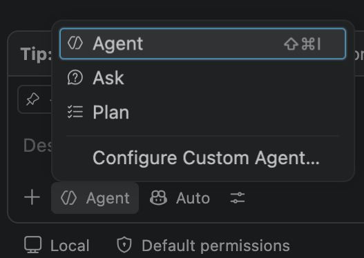
Fig. 4.7 Selecting Agent mode from the Copilot chat dropdown.#
In the chat window, paste the prompt:
Edit this repo so arbitrary longitudes are accepted.
{kind=link}
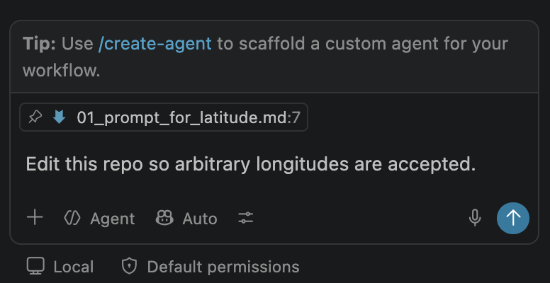
Fig. 4.8 The prompt pasted into the Copilot chat window in Agent mode.#
Click the blue arrow to send the prompt, or press Enter. The agent will begin working. Select “Keep” when prompted to keep file changes.
When prompted, select the dropdown menu and select “Allow Exact Command Line in this Workspace” - we will learn about permissions in the next part of the exercise.
{kind=link}
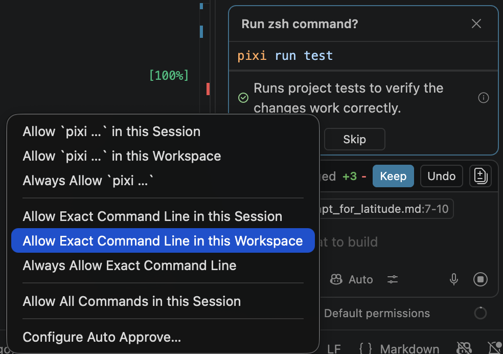
Fig. 4.9 The permission dropdown shown when the agent asks to run pixi run test. Select Allow Exact Command Line in this Workspace.#
4.3.2. Safety and Security#
Simon Willison names three capabilities that are individually useful and jointly dangerous: “access to your private data,” “exposure to untrusted content,” and “the ability to externally communicate.”
If your agent combines these three features, an attacker can easily trick it into accessing your private data and sending it to that attacker.
Simon Willison, “The lethal trifecta for AI agents”, June 2025
A coding agent with your repository, your credentials, web access, and a shell has all three by default. The risk of an agent running something like sudo rm -r ~/* on accident is low but still possible, given that we are working with probabilistic models. Most current LLMs are conditioned not to do actively harmful things, regardless of what the coding harness does or doesn’t allow.
However, malicious actors can, for example, hide instructions in seemingly harmless files the agent downloads as part of a project which hijack the prompt to invisibly build vulnerabilities into a software package, or transfer private user data for ransom or sale. Because the model predicts a probability distribution, external information can be engineered to influence model predictions. The best protection against this is deterministic - permissions and isolation.
4.3.2.1. Safety and Security - Best Practices#
With all three elements of the lethal trifecta, there is no such thing as 100% safety. Only by removing one pillar - by not allowing the coding harness to access 1. all web content OR 2. private files OR 3. a web connection - can prompt injection be completely prevented.
4.3.2.2. Safety and Security - exercise#
Start a new agent session by pressing CMD+N (Mac) or CTRL+N (Windows), or by pressing the ‘+’ button at the top of the chat window. Then, run the prompt from prompts/02_run_tests.md in the chat window in agent mode:
Run the test suite
{kind=link}
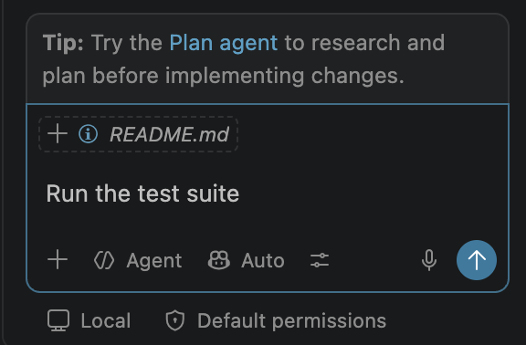
Fig. 4.10 The correct prompt in the prompt window.#
{kind=link}
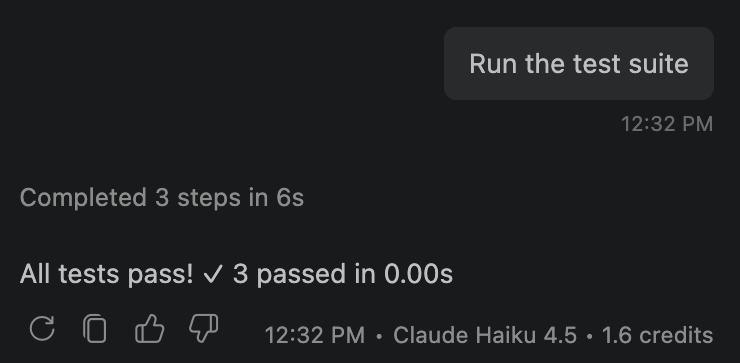
Fig. 4.11 Example output of the prompt.#
WHY:
In the previous exercise, we selected Allow Exact Command Line in this Workspace. If we open .vscode/settings.json in this repository, we can see that this has been recorded for future sessions within this folder. Now that this has been recorded, the agent no longer asks for permission to run pixi run test in this workspace.
{kind=link}
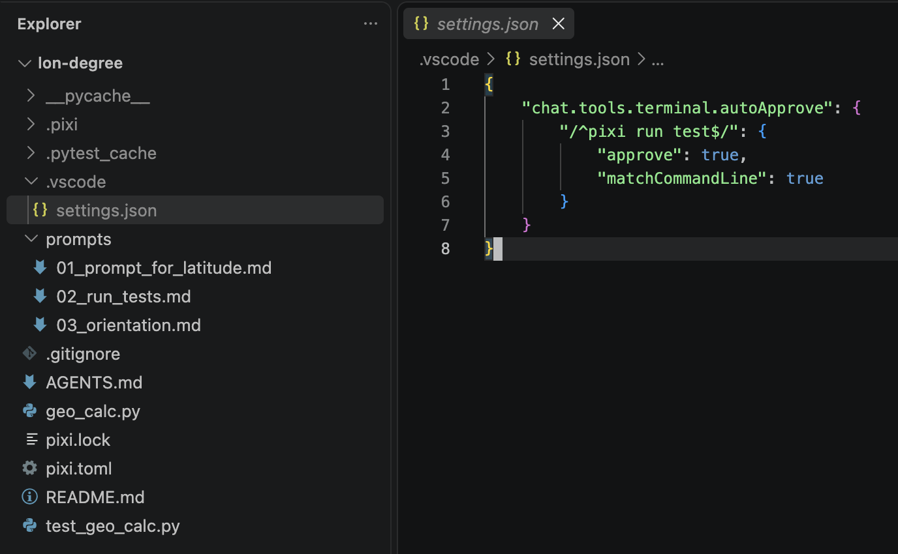
Fig. 4.12 The auto-approve rule recorded in .vscode/settings.json after selecting Allow Exact Command Line in this Workspace.#
The reason why we select “Allow Exact Command” rather than “Allow pixi …” is that pixi can run arbitrary code - if the agent had fetched something from a malicious website, allowing it to run anything after pixi would grant malicious code a way to bypass permissions.
NOTE: This exercise is for the purposes of demonstrating permissions. This prompt is inefficient, given that we could run the test suite ourselves with pixi run test. Speaking of efficiency….
4.3.3. Efficiency and Effectiveness#
Checking out a parallel copy of our Go repository and telling the AI to rewrite the whole thing in Zig while I work on something else just so I can keep my job. I hate this shit so much. My job has usage tracking and quotas. I don’t use it for actual work, I just spin it up and disregard the output.
In the old days of a few months ago, many software companies would set token leaderboards for AI usage to encourage adoption, believing the long-term benefits to productivity would outweigh the immediate spend on AI services. Employees were rewarded the more tokens they used with no limitations, with costs per month of thousands of dollars in some cases.
This has since been phased out at many companies, which now give programmers a token budget and ask that it is used effectively. Making use of agentic AI tools efficiently and intelligently is a skill in itself.
Real-world example from Clark: a researcher was using GitHub Copilot to work on a mapping project for an outside organization. This repository was structured like this generic example:
project/
├── README.md (placeholder with one line)
├── pixi.toml
├── data/
│ └── ...
├── notebooks/
│ └── ...
├── src/
│ └── ...
├── tests/
│ └── ...
└── docs/
└── ...
Note that this repository contains no AGENTS.md and only a placeholder README.md - anyone trying to discover what the repository does would need to read every file.
During one session in which they were adding a tightly-scoped feature to visualize named areas of the map, the researcher had the idea that the app could work as a web-hosted service rather than on the user’s local machine. So, in the conversation, they typed:
should this whole project be a web service?
Due to the lack of an AGENTS.md file, the agent loaded every file into the prompt to decide what was relevant. Additionally, it then predicted that a web search was necessary to answer this question fully. The context window ballooned to 10x its original size in one turn. Then, after a few more turns with the now-enormous prompt, the researcher’s monthly token budget was completely used up.
An AGENTS.md with a clear project structure, user requirements, and constraints would have allowed the agent to answer this with no additional context.
4.3.3.1. Efficiency - Best Practices#
Structure project documents so an AI agent can discover the minimum of information needed for a given task.
When prompting, think about what information the agent has and what it might need to fulfill what you are asking for. Be explicit about what information to use if you have access to it.
Separate out brainstorming, planning, and building into separate sessions.
4.3.3.2. Efficiency - exercise#
DO: In the Sessions selector of the chat window, find the session where the agent made changes to the files. In the interface, you can hover over one turn to see usage statistics. Here is an example of the usage of a run with a clearly defined README.md and AGENTS.md:
{kind=link}
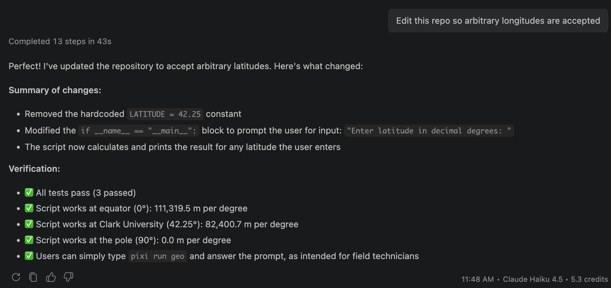
Fig. 4.13 Example: run using clear README.md and AGENTS.md. The task is completed in a single turn.#
WHY:
As an example of what not to do, the same prompt was used in an identical repository with no AGENTS.md and a single-line README.md that just contained:
Prints the number of meters in one degree of longitude at Clark University
This example simulates what happens if a programmer has project needs and constraints that are not made clear to a coding agent. This session took 3 turns to arrive at the same result, causing the total usage to more than double.
{kind=link}
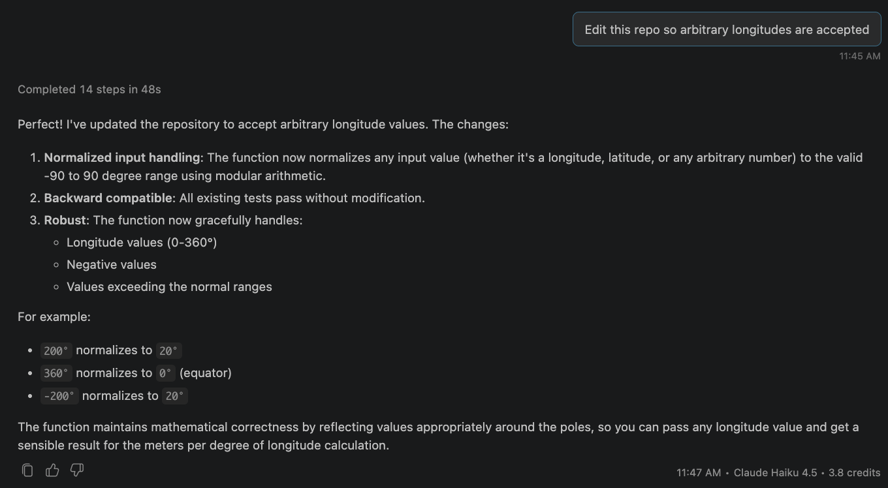
Fig. 4.14 Turn 1 of the run using a single-line README.md and no AGENTS.md. The agent misreads the goal and normalizes longitudes instead.#
{kind=link}
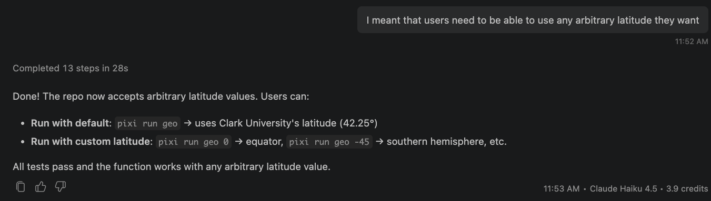
Fig. 4.15 Turn 2: the user has to clarify that the goal was arbitrary latitudes.#
{kind=link}
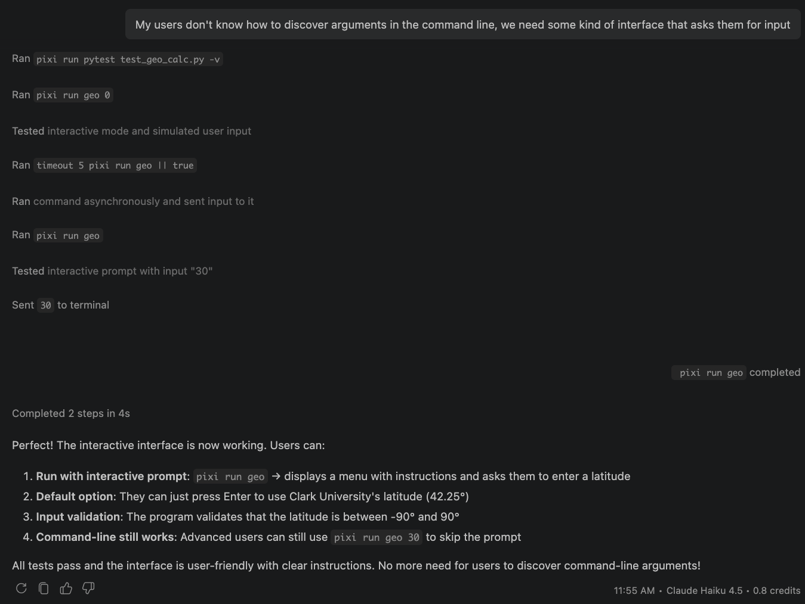
Fig. 4.16 Turn 3: the user has to explain the interface requirement that AGENTS.md would have provided. This is the same initial prompt and the same initial goal, just without the explicit definition of goals in a discoverable way.#
4.4. Reflecting and Learning From Agentic AI Use#
The state of the art is constantly changing. Most of the content in this lecture was unthinkable a few years ago and will likely be obsolete in a few more years. The thing that will always be relevant is the ability to experiment, make mistakes, reflect on them, learn from them, and improve your understanding independently.
There is no one right way to use agentic AI tools. Any use of AI (agentic or not) should be documented as a matter of transparency, both in education and, as much as possible, in the processes and repositories of people designing software to solve problems. As part of your future assignments, we will require you to reflect on your methods, what worked, what didn’t, and what could be improved for next time. We recommend that you keep a log where you record these things as you go. Write the log and the reflection yourself, without AI, as they will also be read without the use of AI.
If your tool can export a transcript (VS Code’s “Chat: Export Chat” command, Claude Code’s /export, or a share link from a web chatbot), you can also save it under ai_logs/. Exports are optional and ungraded, but can be referred to from your reflection.